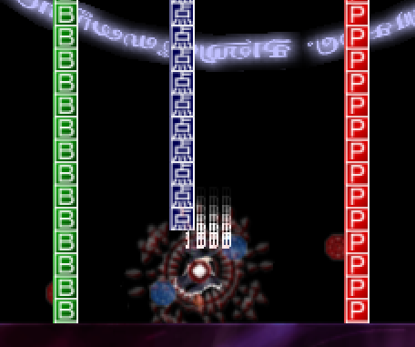

Sparen's Danmakufu ph3 Tutorials Lesson 27 - Basics of Items
Table of Contents
Part 1: What will be covered in this lesson?
In this lesson, we will cover items in Danmakufu. We will discuss the default Item Objects and functions that can be used on Items, as well as how to create Item Objects using Events in Danmakufu. This lesson requires knowledge on NotifyEventAll, so please review Lessons 25 and 26 if you are not familiar with how Events work. This lesson assumes that you are at the stage in your Danmakufu career where you are always using Stage Scripts to handle script-wide events/music/loading plurals.
Creating custom items will be left for a later guide and will not be covered in this lesson.
Part 2: How do I create and manipulate Item Objects?
In Danmakufu, items are objects that can be 'collected' by the player. By default, they fly upwards then fall vertically downwards. If the player goes above the autocollect line, all items currently on-screen will fly at the player until collected or something happens to the player (death, etc).
We use CreateItemA1() and CreateItemA2() to create default items in Danmakufu. For reference, refer to Item Function Documentation on the DNH Wiki. Here you can see that CreateItemA1() takes four parameters, the first being the type of the item. This can be one of the following: ITEM_1UP, ITEM_SPELL, ITEM_POINT, ITEM_POWER, ITEM_USER, and _S variants of the first four. The other parameters are the starting position and score value for collecting the item. CreateItemA2 is similar but allows you to specify a destination to move to.
Besides these, there a number of other helpful functions. CollectAllItems() will force all items on-screen to move at the player (helpful when the player bombs/uses a spellcard). CollectItemsInCircle() does something similar but only in a circle that can be placed anywhere on-screen, while CollectItemsByType() only works on a certain object type.
In addition, it is necessary to mention Bullet Delete Items - these special items are created when bullets are deleted (such as at the end of a spellcard or by a player bomb/spellcard). These are the small items that fly at the player and award points for clearing bullets.
Note that CreateItemA1() and CreateItemA2() return the object IDs of the created objects, allowing you to perform ObjMove and ObjRender functions on them. In addition, you can utilize Item Object Functions on them. You can use ObjItem_SetRenderScoreEnable() to control whether the score is rendered on collection, for example. ObjItem_SetAutoCollectEnable() allows you to decide whether or not the item can be autocollected when the player moves above the item autocollect line. In addition, ObjItem_SetDefinedMovePatternA1() allows you to change item movement behavior - as noted earlier, items by default fly upwards before falling down. This function provides ITEM_MOVE_DOWN and ITEM_MOVE_TOPLAYER - the former removes the flying upwards before falling while the latter makes the item aim at the player immediately.
Now that we have an understanding of the types of functions we can use, if you were to actually *use* CreateItemA1() or CreateItemA2(), you will likely be surprised to see that none of the created items actually *do* anything when collected. Well, the score works. But Point items do not increase points, 1UPs don't give extends/extra lives, and Spell items don't add spellcards/bombs. By default, all of this behavior is nonexistent and must be added by the scripter.
Custom items and item scripts will be explored in a later guide.
Part 3: How do I spawn Item Objects when using AutoDelete?
For now, let's get back to actually spawning items. Of course you can just call CreateItemA1() whenever you want to, but you typically spawn items at the end of a script. The problem here, of course, is that if SetAutoDeleteObject() is set to true to do automatic cleanup of your Single's objects, the objects you create at the end of your script will be purged along with everything else.
To rectify this, we must make the objects spawn in a different script.
What?! you may be thinking to yourself. It is a roundabout solution but it is also one that is reliable and scalable. We will define user events in our stage script and then trigger these events from within our Single script.
First, the stage script:
@Event{
alternative(GetEventType())
case(EV_USER_STAGE+1){ //Generic Spell point drop
let arg = GetEventArgument(0); //x, y
CreateItemA1(ITEM_POINT, arg[0], arg[1], 15000);
}
case(EV_USER_STAGE+2){ //Generic Spell point drop
let arg = GetEventArgument(0); //x, y
ascent(i in 0..12){
CreateItemA1(ITEM_POINT, arg[0] + 30*cos(30*i), arg[1] + 30*sin(30*i), 15000);
}
}
...
}Here we have two events for spawning items - one that spawns a single ITEM_POINT at a position passed as a parameter via NotifyEventAll, and one that spawns a ring of 12 ITEM_POINT in radius 30 from the provided spawn point.
As for triggering? In TFinalize or wherever you handle the end of the script, call something along the lines of the following. Make sure you call it BEFORE you delete the boss object, or the item will spawn at (0,0).
NotifyEventAll(EV_USER_STAGE+2, [ObjMove_GetX(objBoss), ObjMove_GetY(objBoss)]);Here we have an event call that passes the current position of the boss in as the event argument, in the form of an array. And voila, we've spawned a bunch of items.
Quiz: Items in Danmakufu
1) Eirin is making programmable suppository-shaped items that she intends to sneak into Reisen's bullet collection. How can she ensure that when fired, they aim straight for the player?
2) Given the following image, what function would we use to disable the built-in numerical display on point collect?

Summary
- Items in Danmakufu are objects that can be collected by the player
- Items in Danmakufu are a subtype of Move and Render Objects
- By default, Items are purely graphical/score and do not have extra functionality built in
- NotifyEventAll can be used to create items in a different script, bypassing autodeletion restrictions
Sources and External Resources
Sparen's Basic Ph3 Item Tutorial (Sparen of Iría)
-->Original tutorial explaining NotifyEventAll usage to circumvent Item Object autodeletion